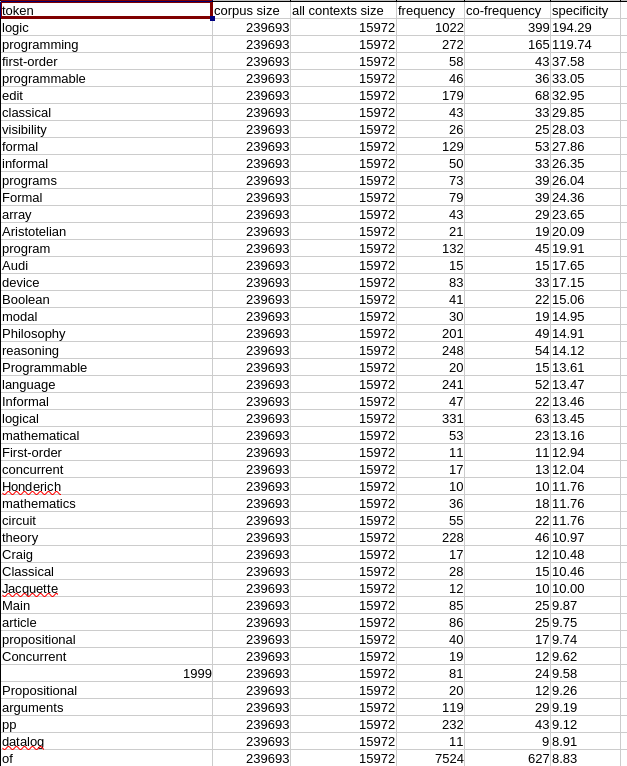

Pour effectuer l'analyse, on est demandé d'utiliser les script pals (Python Autonomous Lafon Specificity Scripts) qui sont des scripts python dont la référence est ici (https://github.com/YoannDupont/PALS). Un ensemble de scripts qui ne nécessitent pas de configuration, ni de dépendences, possible d'être utilisé pour comparer les autres outils comme TXM et itrameur qui calculent la spécificité Lafon. Ces scripts permettent d'effectuer la spécificité Lafon (Lafon, P. (1980). Sur la variabilité de la fréquence des formes dans un corpus. Mots. Les langages du politique, 1(1), 127-165.). Cette spécificité mesure, comme son nom l’indique, la spécificité d’une forme dans une partie d’un corpus. Cette partie peut être issue d’un partitionnement quelconque (chapitres, livres, etc.) ou d’un dé-coupage plus spécifique (les alentours d’un mot). Pour l'analyse du mot anglais logic, j'ai principalement utilisé le script cooccurents.py que j'expliquerai un peu loin.
Pour bien employer le script cooccurents.py, on doit d'abord normalise nos corpus. Après avoir lancé mon script url_en.sh, j'obtiens un ensemble de fichiers nommés en_dumps.txt et le pals attent que l'input ayant la forme dont un mot occupe une ligne, et si possible séparer les phrases avec une ligne vide pour avoir des résultats plus satisfaisants. Dans mon cas, j'ai transformé d'abord mes 50 dumps txt dans un seul fichier txt avec le programme to_one_text.sh créé temporairemnt que vous pouvez trouver sur mon github, puis avec la commande grep -o -P '\p{L}+(\p{P}\p{L}+)+|\p{Nd}+|\p{L}+' $file > "./tokenized_$file", j'ai fait la tokenization et obtenu le résultat attendu. Ici l'option -P signigie Perl qui peut interprétere les patterns compatibles aux perl expressions régulières. La syntaxe sera grep -p \p{proprité_unicode_data} possible d'utiliser les regex.
Donc maintenant, j'ai obtenu le fichier capable d'être interprété par le script cooccurents.py, j'ai créé alors ce script make_corpus_pals_en.sh. Après l'exécution j'ai obtenu un fichier tsv, une forme de tableaux avec 6 colonnes : tokens corpus_size all_contexte_size frequency co-frequency specifity. Ensuite, j'ai refait les étapes au-dessus pour les txt contextes, pareil, j'obtiens un autre tsv.
Vu la similitude sémantique du mot logique dans les langues différentes, mon analyse vise à principalement étudier les contextes où le mot logique en anglais est utilisé. Mon corpus size est 239693 qui veut dire ce nombre de tokens. Dans le dumps tsv, j'ai constaté que le mot logic est le mot le plus fréquent avec la value frequency 1022 qui veut dire qu'il apparaît 1022 fois dans le corpus, et avec la value speficifity 194.29 qui est important et j'ai vite constaté que le deuxième mot le plus fréquent est le mot programming avec 272 frequency. Et les mots qui suivent sont comme programmable, formal, array, programmable. Et si on le compare avec le mot logique en chinois, on constate que le mot en chinois est plus lié à la philosophie, à la rechershe, et dans portugais, le mot est lié aux mots comme société, l'apprensittage, la musique. On voit que le mot en anglais a une contexte plus utilisé ou même majoritairement utilisé qui est le domaine de la programmation.
On peut ainsi en déduire que cela pourrait lié au fait que la langue anglaise est la langue de la programmation, utilisée pour écrire les interprétateur comme python, C, C++, R... Avec cette indice, on peut se poser la question qui est pouquoi cette différence de contexte ? D'abord cela pourrait être lié au départ, chaque membre de notre groupe a choisi d'utiliser les types de corpus spécifiés mais dans le script étudie les coourrences, on étudie les mots qui apparaissent avec le mot logique. Par exemple, dans le contexte de la Chine, le mot logique dans la vie est très liée aux idéologies du parti socialist chinois, et aux philosophies trationnelles chinoises, donc dans les résutalts du mot logique en chinois, on remarque les cooccurents qui sont des mots comme dialectique, Chine, rapport de production, histoire. Alors qu'en anglais, en ce moment, avec le développement de l'IA, des articles qui étudient les modèles d'apprensittage automatiques ont bcp augmenté. C'est une des raisons pour laquelle on constate que type de contexte en anglais.
